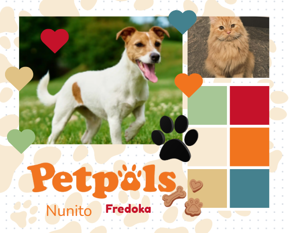
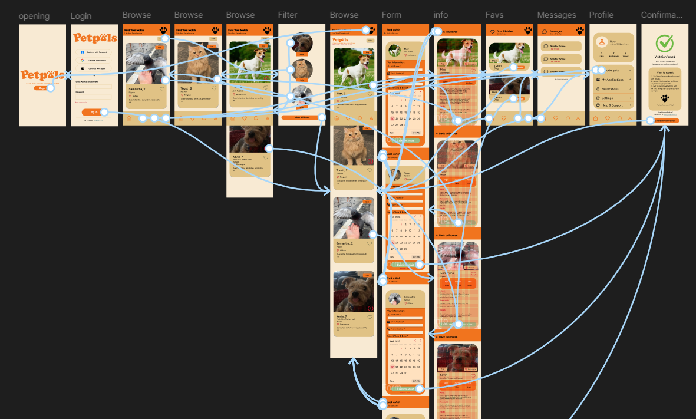
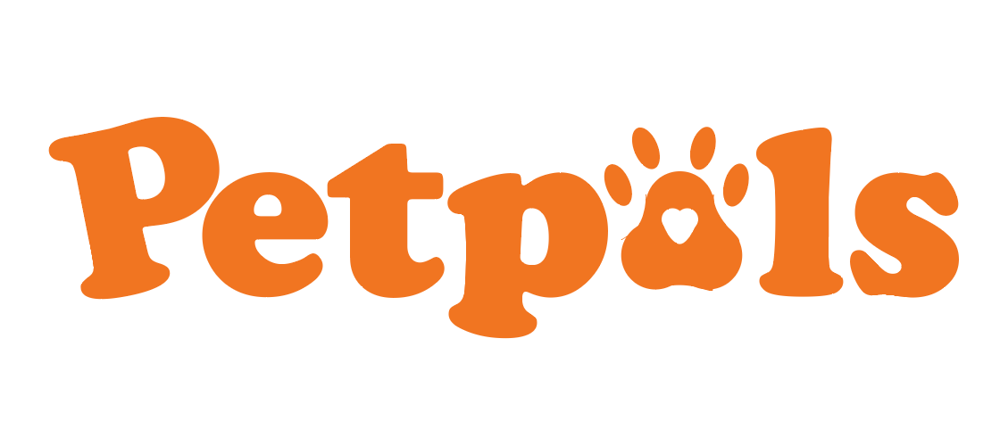

UX / App Design · 2025
PetPals
A pet adoption app built from the research from who adopts and what stops them, through to a tested, accessible set of screens.
The project followed a full research-to-ship process: primary and secondary research, affinity mapping, personas and a problem statement, then visual design, prototyping, user testing and accessibility checks.
Research plan
What I needed to find out and how I'd get it.
Primary research
Talking to people about their experience of adopting, or wanting to. For this I sent out a survey and gathered statistics based on that.
Secondary research
Existing adoption apps, shelters and rehoming sites. I conducted a S.W.O.T analysis — the strengths, weaknesses, opportunities and threats of three different sources.
Affinity map
Grouping what came back into themes.
Top 5 pain points
From my research, I noted the top 5 pain points I was going to tackle.
Jobs to be done
I concluded exactly what people need from my app.
Personas
I built user personas to base my prototype on.
The problem
People looking to adopt pets across Ireland struggle to confidently choose the right animal because existing online listings provide limited behavioural insight, outdated profiles, and unclear next steps. A more transparent and guided experience is needed to help them make informed, compassionate adoption decisions.
Visual design
The palette, type and illustration style that give the app its warm feel — cream and orange with a soft red and sage, a rounded hand-drawn logo, and paw prints used as a repeating motif.

User flow
The path from opening the app to a confirmed visit, mapped before any screen was built — browse, filter, pet profile, form, confirmation, favourites, messages and account, with every route between them drawn out.

Logo
A rounded, hand-drawn logo in orange, with the counter of the "a" replaced by a paw print — soft enough to feel friendly, simple enough to work small on a phone screen.

Screen design
Onboarding, browse, pet profile, booking, confirmation, matches, messages and account — built out as a full set of screens with Nunito for UI text and Fredoka for headings.

User testing
Putting the flow in front of people and watching where it held up.
Improvements
What changed as a result of testing.
Accessibility
Contrast, tap targets and readable type across the screens.
Usability heuristics
Checking the design against Nielsen's heuristics.
Design rationale
Why each decision was made, tied back to the research.
References
The sources behind the research and the heuristics.
The screens
The finished app runs from a warm onboarding and a simple email sign-in, into a browse feed of adoptable pets with age, breed and location at a glance. Opening a pet gives a full profile with temperament, and clear "Contact Shelter" and "Apply Now" actions. Booking a visit is a short form — date, time, reason — followed by a confirmation screen that sets expectations for the day. From there the app keeps people in the loop with a matches tab, a messages inbox for shelters, and an account area for favourites, applications and notifications.
Outcome
A pet adoption app grounded in real research — from who adopts and what stops them — through to a tested, accessible set of screens. The process record shows a clear line from survey and secondary research, through personas and a problem statement, to a warm, consistent visual system and a flow that makes the next step obvious at every point.